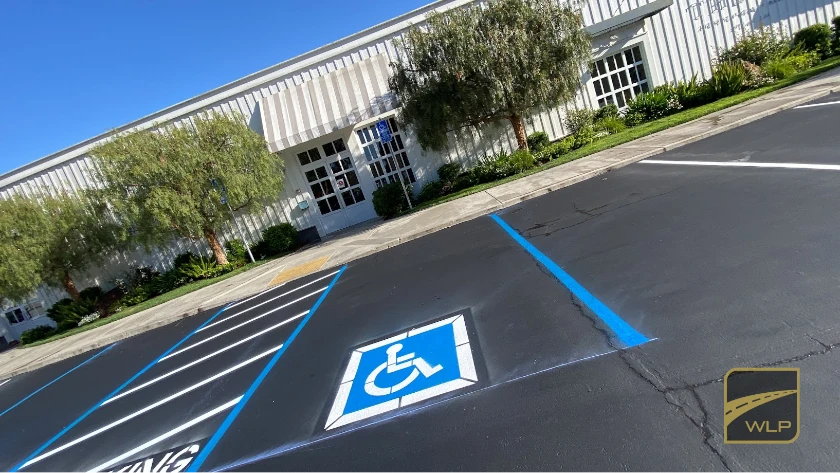
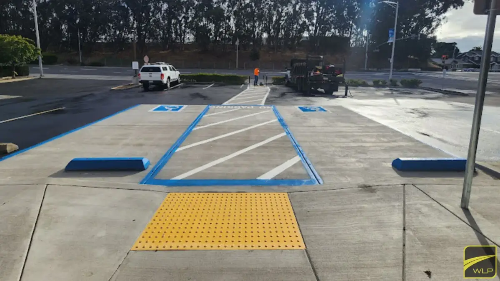
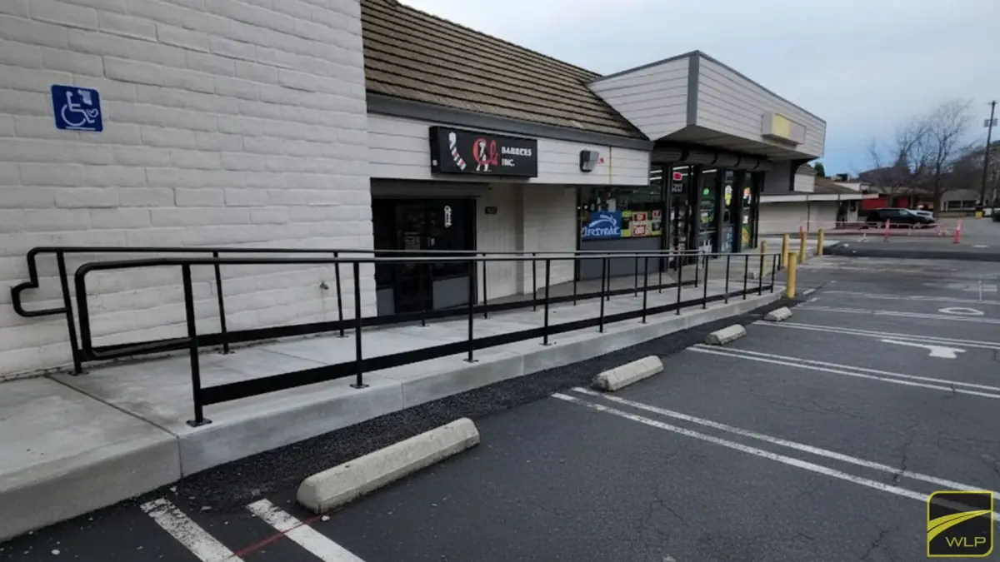
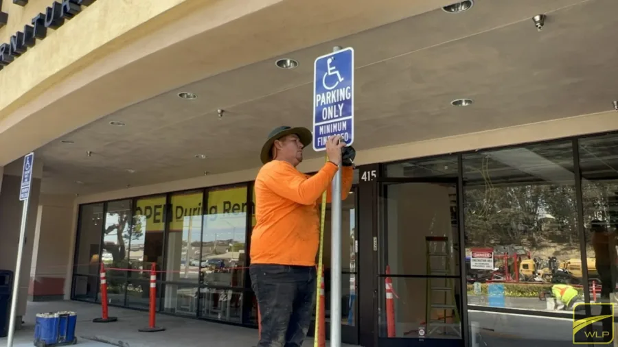
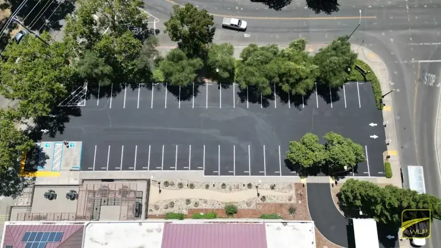
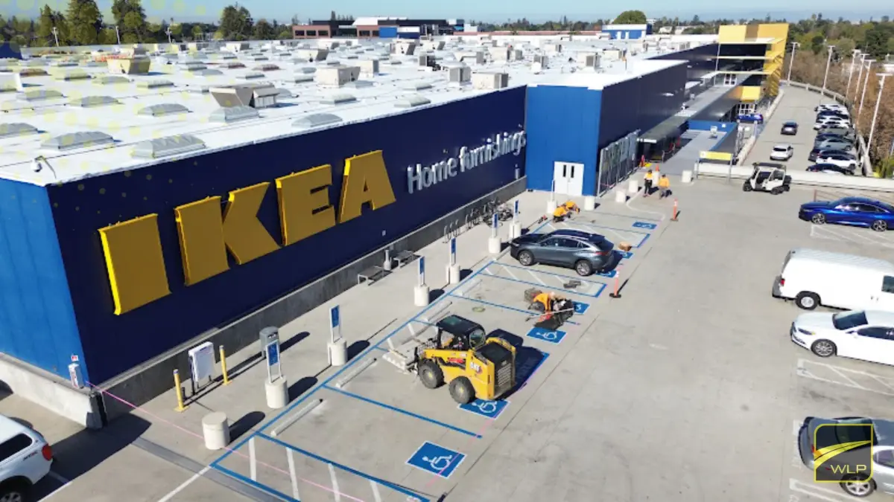
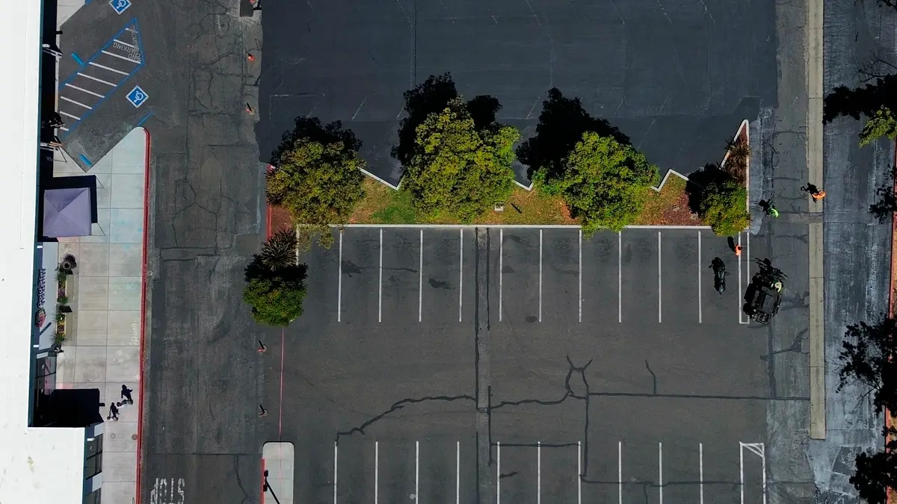

PARKING
Accessible Parking Spaces
Configuration, dimensions, location and van-accessible requirements.

Northern California ADA Accessibility Upgrades
We help commercial property owners and managers identify and correct accessibility issues involving parking spaces, ramps, signage, pavement markings, accessible routes and surface conditions.
Share your details to discuss your ADA needs.
No obligation. Northern California commercial properties only.

Accessibility concerns can affect cost, scheduling and property operations when the required scope remains unclear, and the longer it stays that way, the harder it becomes to control cost, scope and timing.
Accessibility conditions can involve multiple areas of the parking lot and path of travel. We cover all of them.
Configuration, dimensions, location and van-accessible requirements.

Width, pavement markings, obstructions and relationship to parking spaces.

Ramp condition, transitions, detectable warnings and pedestrian connections.

Vertical identification, visibility, placement and van-accessible signs.

Accessible symbols, access aisles, no-parking zones and directional markings.

Cross slopes, running slopes, cracks, settlement and uneven transitions.

Every property must be reviewed individually. The required corrective scope depends on existing site conditions, applicable standards and project context.
Clear expectations, coordinated work and written protection help reduce uncertainty throughout the project.
Warranty terms and qualifying scopes are documented.
Paving, concrete, striping and signage coordinated through one project team.
Clients receive defined expectations, updates and next steps.
Parking lots, HOA communities, retail properties and high-traffic environments.
Tell us the property and the concern. No obligation, no pressure, no cost.
WLP reviews the available information and site conditions, remote or in site.
Receive a clear description of the proposed work.
Work is coordinated, completed and documented, with applicable protection.


Served property types
Share the basics. A WLP paving advisor will contact you to confirm the property conditions, scope and next steps.
No obligation. Northern California commercial properties only. By submitting, you agree WLP may contact you regarding your request. WLP is not a Certified Access Specialist and does not provide legal compliance certification.